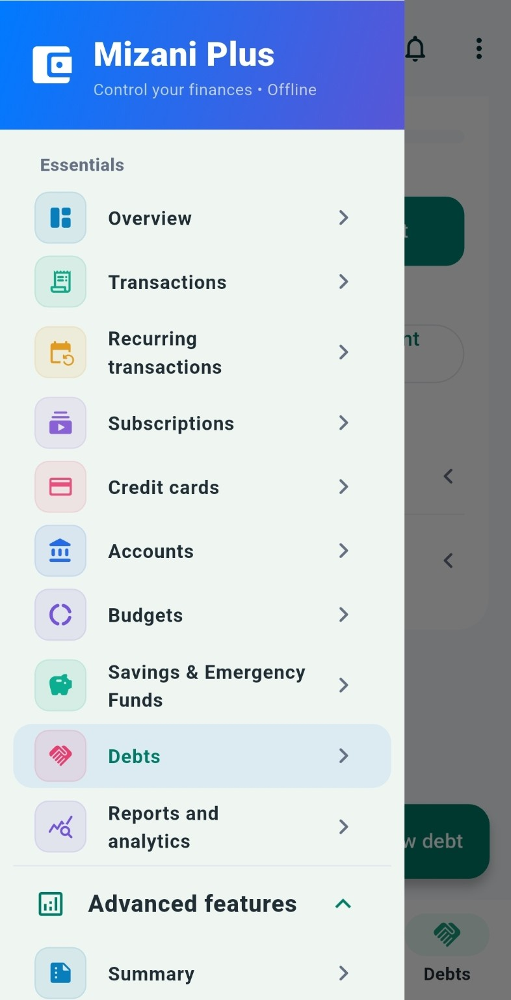
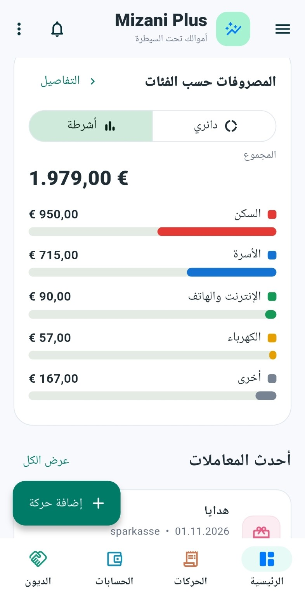
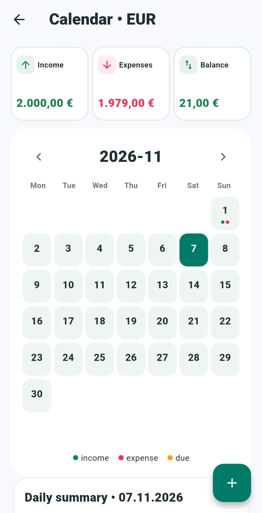
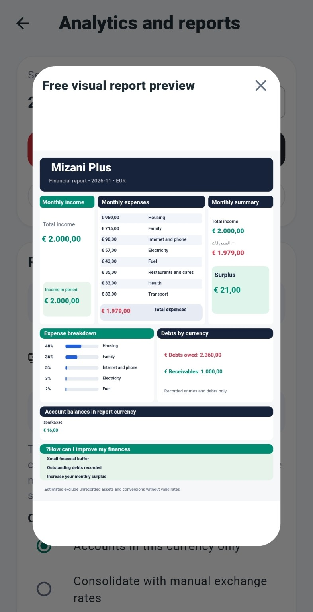
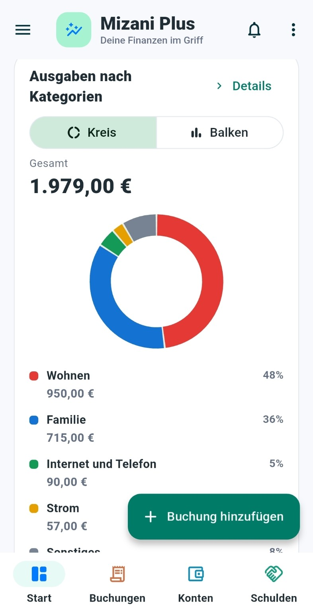

Einnahmen & Ausgaben
Erfasse Buchungen und erkenne, wohin dein Geld fließt.
Behalte Einnahmen, Ausgaben, Konten, Budgets und Schulden an einem Ort im Blick – übersichtlich und auch offline.

Von der täglichen Buchung bis zur monatlichen Auswertung – die wichtigsten Werkzeuge an einem Ort.
Erfasse Buchungen und erkenne, wohin dein Geld fließt.
Verwalte verschiedene Konten, Währungen und Karten.
Plane Ausgaben und behalte Spar- und Notfallziele im Auge.
Behalte offene Beträge und Rückzahlungen im Blick.
Sieh finanzielle Aktivitäten nach Datum und plane wiederkehrende Buchungen.
Verstehe deine Finanzen mit übersichtlichen Auswertungen und Grafiken.
Echte Screenshots aus Mizani Plus. Wische auf dem Handy seitlich, um mehr zu sehen.




Die Abbildungen zeigen Entwicklungsansichten. Funktionen und Darstellung können sich bis zur Veröffentlichung ändern.
Mizani Plus ist für die Nutzung auf deinem Android-Gerät konzipiert. Für die grundlegende Finanzverwaltung ist keine ständige Internetverbindung erforderlich.
Eine kostenlose Version ist vorgesehen. Zusätzliche Premium-Funktionen können angeboten werden; Details werden zur Veröffentlichung bekannt gegeben.
Mizani Plus unterstützt Arabisch, Deutsch und Englisch.
Die grundlegende Finanzverwaltung ist offline nutzbar. Einzelne Zusatzfunktionen können Internet benötigen.
Der öffentliche Download-Link wird hier ergänzt, sobald Mizani Plus auf Google Play verfügbar ist.
Mizani Plus für Android befindet sich in Vorbereitung. Der Google-Play-Link erscheint hier, sobald die App veröffentlicht ist.